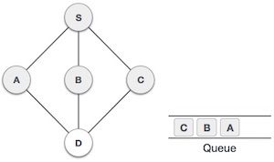
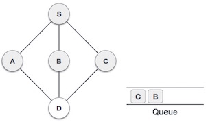
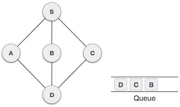

Breadth First Search algorithm(BFS) traverses a graph in a breadthwards motion and uses a queue to remember to get the next vertex to start a search when a dead end occurs in any iteration.

As in example given above, BFS algorithm traverses from A to B to E to F first then to C and G lastly to D. It employs following rules.
Rule 1 − Visit adjacent unvisited vertex. Mark it visited. Display it. Insert it in a queue.
Rule 2 − If no adjacent vertex found, remove the first vertex from queue.
Rule 3 − Repeat Rule 1 and Rule 2 until queue is empty.
| Step | Traversal | Description |
|---|---|---|
| 1. | |
Initialize the queue. |
| 2. | We start from visiting S (starting node), and mark it visited. | |
| 3. | We then see unvisited adjacent node from S. In this example, we have three nodes but alphabetically we choose A mark it visited and enqueue it. | |
| 4. | |
Next unvisited adjacent node from S is B. We mark it visited and enqueue it. |
| 5. |  | Next unvisited adjacent node from S is C. We mark it visited and enqueue it. |
| 6. |  | Now S is left with no unvisited adjacent nodes. So we dequeue and find A. |
| 7. |  | From A we have D as unvisited adjacent node. We mark it visited and enqueue it. |
At this stage we are left with no unmarked (unvisited) nodes. But as per algorithm we keep on dequeuing in order to get all unvisited nodes. When the queue gets emptied the program is over.
The implementation of this algorithm in C programming language can be seen here.